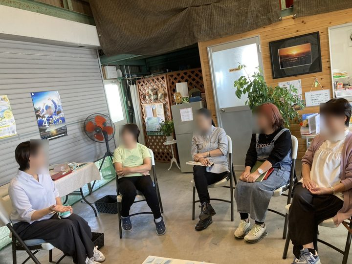

PROFILE
自己紹介
お寺を、法事や儀式のときだけでなく、人が集まって、遊んで、話せる場所にしたい。そう考えて「遊べるお寺プロジェクト」を始めました。いまは、お寺の外にも出て、地域の場をひらいています。
顔写真
（準備中）
こーせん久我 光聖遊べるお寺プロジェクト住職・社会福祉士・保育士滋賀県高島市（準備中）
経歴
- 曹洞宗の僧侶
- 永平寺で4年半、修行
- 保育士として、児童養護施設で4年
- 社会福祉士として、社会福祉協議会で勤務
- 高島市・長善寺の住職
- 2025年4月から「遊べるお寺プロジェクト」
高島での実践
ご依頼の仕事は、高島で自分が開いている会から生まれています。自分で開いて、試して、続いたやり方を、講座や制作でお渡ししています。
 ■ 健康麻雀健康麻雀会（今津町・月1回）数人から始めて、2026年9月には1回で24人。
■ 健康麻雀健康麻雀会（今津町・月1回）数人から始めて、2026年9月には1回で24人。 ■ 健康麻雀公民館の健康麻雀講座定員8名に40名以上の申し込み。いまは月2回の講座に。
■ 健康麻雀公民館の健康麻雀講座定員8名に40名以上の申し込み。いまは月2回の講座に。 ■ 写経湖畔の朝 写経会朝6時から、湖のそばのカフェで。
■ 写経湖畔の朝 写経会朝6時から、湖のそばのカフェで。
■ 終活終活カフェ（2026年10月〜）付箋に話したいことを書いて、みんなで話す。第1回は6名。 ■ 多言語多言語カフェ（2026年10月〜）第1回は台湾。台湾のゲストと台湾麻雀。参加9名。
■ 多言語多言語カフェ（2026年10月〜）第1回は台湾。台湾のゲストと台湾麻雀。参加9名。 ■ ボードゲームボードゲーム会子どもから大人まで、一緒に遊ぶ会。
■ ボードゲームボードゲーム会子どもから大人まで、一緒に遊ぶ会。 ■ 座禅学童での座禅約90人の子どもを、5つの組に分けて。
■ 座禅学童での座禅約90人の子どもを、5つの組に分けて。 ■ 講座講座（Wan）チラシ作り・公式LINE・AI。パソコンが苦手な方にも。
■ 講座講座（Wan）チラシ作り・公式LINE・AI。パソコンが苦手な方にも。
大事にしていること
大きく始めて、続けるために無理をするより、一人でも回せる大きさで始める。そのほうが続く、と考えています。頼まれて作るものも、相手の方が自分で回せる形でお渡しします。
いま高島市で開いている会
参加したい方は、遊べるお寺プロジェクトのホームページへ。